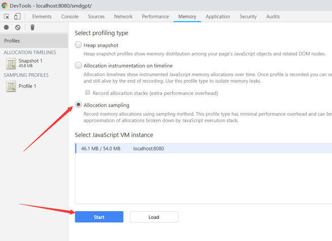
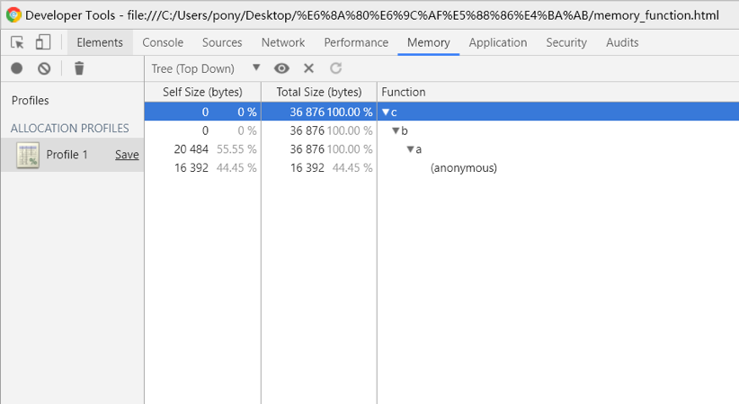
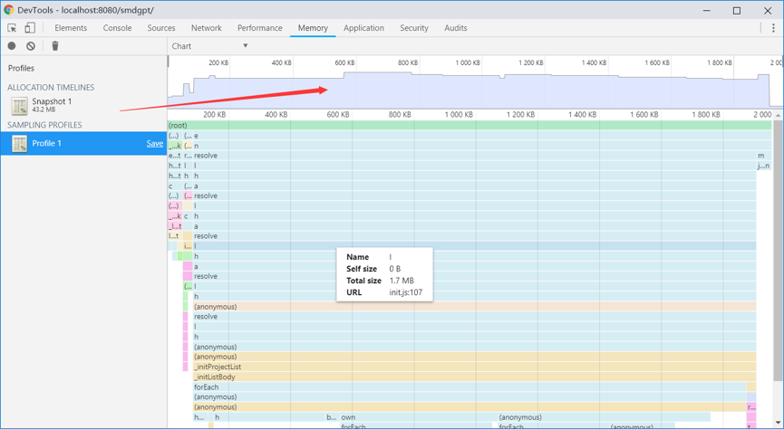

##内存泄漏
当程序持续无法释放其使用的临时内存时就会发生内存泄漏。
JavaScript提供GC垃圾回收进行自动内存管理，其机制是找出不再使用的变量，释放其占用的内存，但是这个内存不是实时的，因为其开销比较大，所以垃圾回收器会按照固定的时间间隔周期性的执行。
不再使用的变量就是生命周期结束的变量，即局部变量（全局变量的生命周期直到浏览器卸载才会结束）。局部变量只在函数的执行过程中存在，而在这个过程中会为局部变量在栈或堆上分配相应的空间，以存储它们的值，然后在函数中使用这些变量，直至函数结束。闭包中由于内部函数的原因，外部函数并不能算是结束。
##避免内存泄漏
(1)避免DOM节点创建中闪屏
IE中有一类典型的内存泄漏模式称为DOM插入顺序内存泄漏。当创建动态当DOM节点时，我们确保上层元素首先被附着，然后是底层。如果顺序反过来，可能导致内存泄漏。
当要创建的 DOM 树很大时，这种从上而下的创建 DOM 节点的方式可能会造成浏览器视图的闪烁。一个好的办法是在 DOM 树渲染期间通过样式”display:none”把最顶层父节点隐藏起来，直到整个 DOM 树都创建好之后，再把顶层父节点展现出来。
var frameNode = domCon.create('div', {
"style": {display: "none"}
}, this.domNode);
// 创建 frameNode 节点下的子节点树
// 当子节点树创建好之后，显示整个 frameNode 节点树
domStyle.set(frameNode, "display",'block')
(2)DOM节点循环引用
当Javascript对象引用DOM元素并且DOM元素当属性引用Javascript对象时，循环应用发生并导致DOM节点泄漏。
var obj = document.getElementById("id");
document.getElementById("id").expandoProperty = obj;
若需要这么使用，在准备移除节点时，先将元素expandoProperty属性设置为null。
(3)Dom节点的引用
<html>
<body>
<div id="refA">
<ul>
<li><a></a></li>
<li><a></a></li>
<li><a id="refB"></a></li>
</ul>
</div>
</body>
</html>
<script>
var refA = document.getElementById('refA');
var refB = document.getElementById('refB');
refB=null;
refB引用了refA。它们之间是dom树父节点和子节点的关系。
如果在此时移除refA,或者将refA对象设置为null，那么这个dom节点在浏览器内存中依然存在。因为refB对refA存在引用，所以除非在把refB释放，否则dom节点内存会一直存在浏览器中无法被回收掉。
(4)闭包
window.onload = function() {
var obj = document.getElementById("element");
// this creates a closure over "element"
// and will leak if not handled properly.
obj.onclick = function(evt) {
alert("leak the element DIV");
};
};
应用程序之后删除了element节点，JavaScript 引用仍然会持有孤立节点。这个孤立节点将会造成内存泄露。
(5)定时器setTimeout setInterval
当不需要setInterval或者setTimeout时，定时器没有被clear，定时器的回调函数以及内部依赖的变量都不能被回收，造成内存泄漏。
##ChromeDevTools工具
以上介绍了几种内存泄漏的情况，那么我们在项目中如何发现可能存在内存泄漏的地方。
Performance
Performance按时间顺序展示页面加载过程及后续过程的网络请求、页面渲染过程、JS运行时长、页面帧率、CPU/GPU使用情况等
1，在timeline中观测页面资源加载情况（时长，顺序），降低页面加载时长。
2，在timeline中观测FPS情况，观测底下的JS执行耗时，能分析出哪部分耗时过长，导致帧率下降Memory
Memory监控CPU使用情况，内存分配情况等，用于做深入分析
1、Record Allocation profiles(allocation sampling)
监控函数执行期花费的时间。点击下方的Start按钮（也可以点击左边的黑色圆圈），这时候Chrome会开始记录网页的方法执行，然后我们点击界面的按钮来执行。（用来查看分配给各函数的内存大小）

最后再点击右边区域的Stop按钮（或者左边的红色圆圈），这时监控就结束了。左边Profiles会列出一个文件，单击可以看到如下界面

从上面结果中，可以发现，在点击开始，运行操作界面之后，点击停止，该工具记录了在这个期间，执行过的一些函数，以及执行这些函数所分配的内存状况。
可以转换chart图表模式查看。
2、Record Allocation timeline
它的作用是为我们拍下一系列的快照（频率为50ms），为我们检测在启用它的时候每个对象的生存情况。形象一点说就是假如拍摄内存快照的功能是照相那么它功能相当于录像。当启用start按钮的时候它便开始录像，直到结束。
左侧区域上半部分有一些蓝色和灰色的柱条。灰色的表示监控这段时间内活跃过的对象，但是被回收掉了。蓝色的表示依旧没有没回收.（用来查看实时的内存分配及回收情况）。

3、Heap snapshot
Summary(概要)视图能帮你通过构造函数分组寻找对象(和对象的内存使用)。该视图对找出DOM内存泄漏很有帮助。
Comparison(对照)视图能够通过显示哪些对象内存被正确的回收了来搜寻内存泄漏。通常在一个操作前后记录两个(或更多)的内存使用快照。它是通过察看释放的内存和引用数目的差导来察看是否有内存泄漏，并找到原因。
Constructor(构造函数)表示所有通过该构造函数生成的对象
Distance 对象到达GC根的最短距离
Shallow size 对应构造函数生成的对象的shallow sizes(直接占用内存)
Retained size 展示了对应对象所占用的最大内存。
function a() {
var obj = [1,2,.......n];
return function() {
//js作用域的原因，在此闭包运行的上下文中可以访问到obj这个对象
console.log(obj);
}
}
var b = a();
######正常情况下，a函数执行完毕 obj占用的内存会被回收，但是此处a函数返回了一个函数表达式，其中obj因为js的作用域的特殊性一直存在，所以我们可以说b引用了obj。每次访问b对象的时候都可以访问到obj，说明内存未被回收 所以对于obj来说直接占用内存[1,2,….n], 而b依赖obj，所obj是b的最大内存。